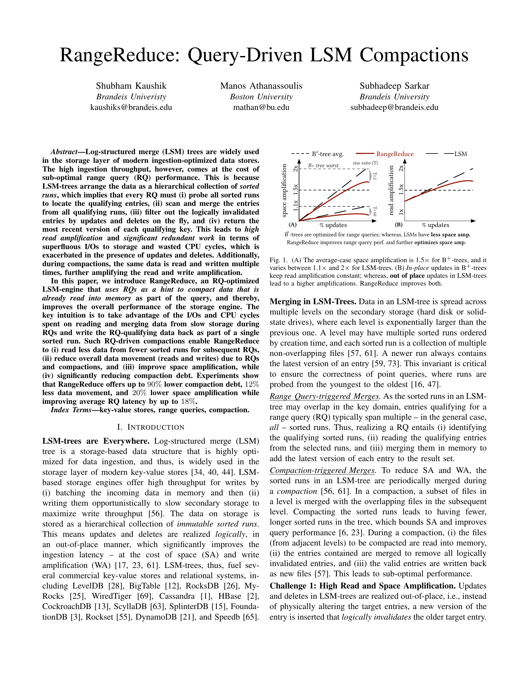
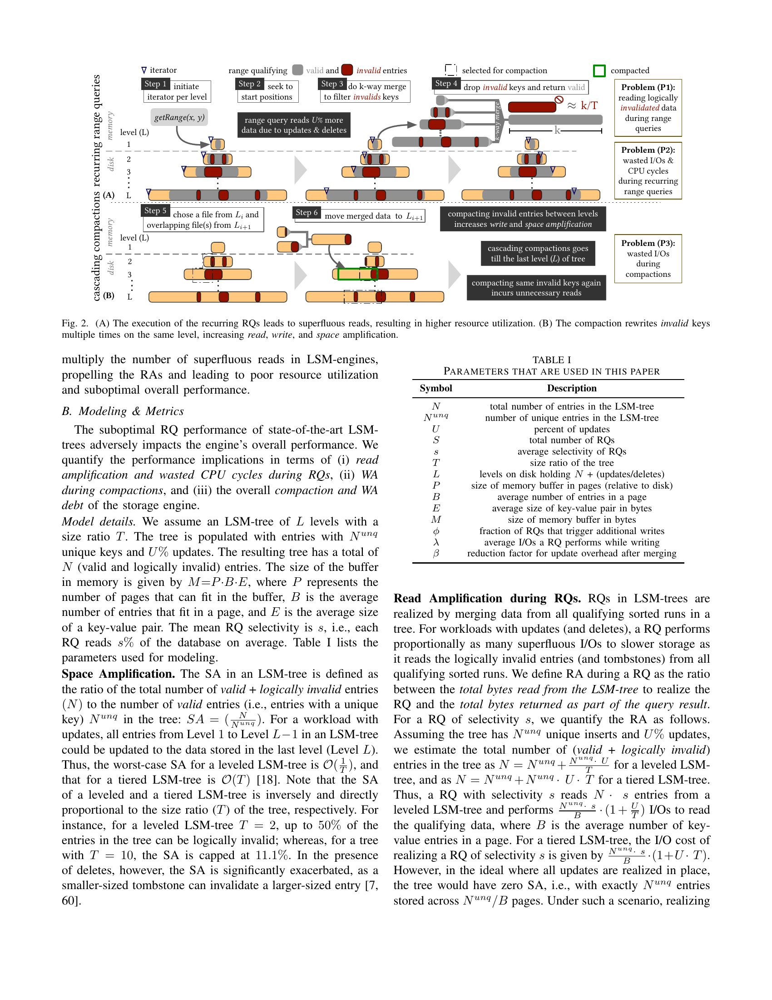
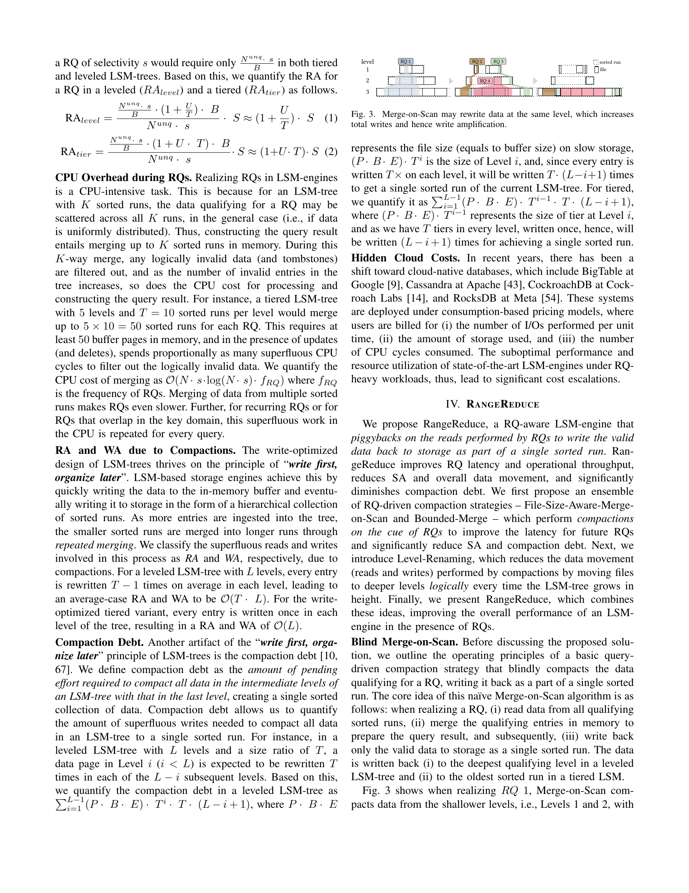
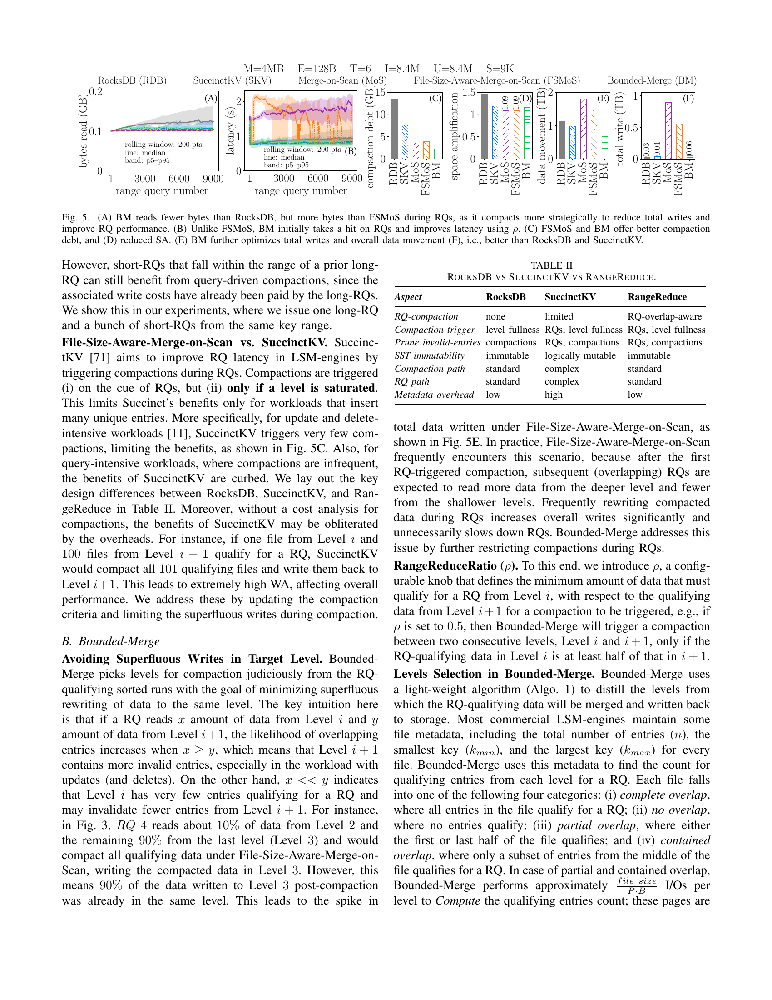
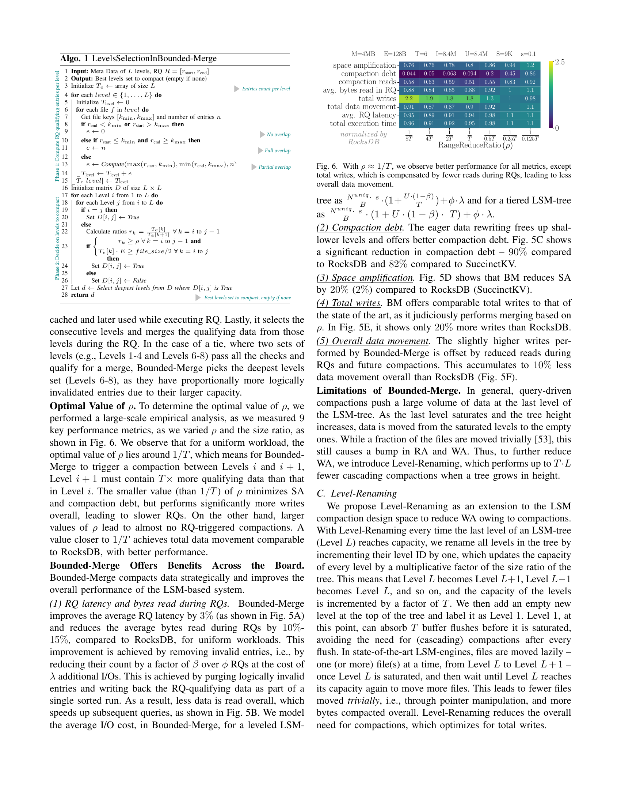
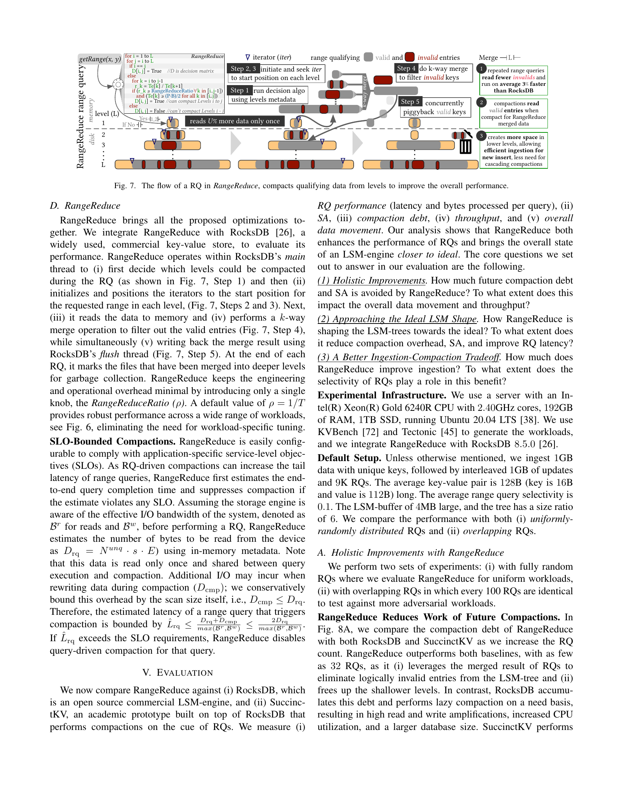
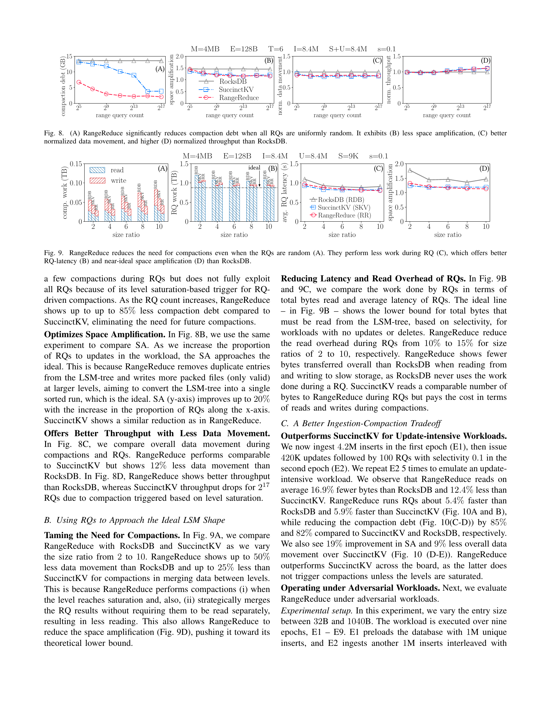
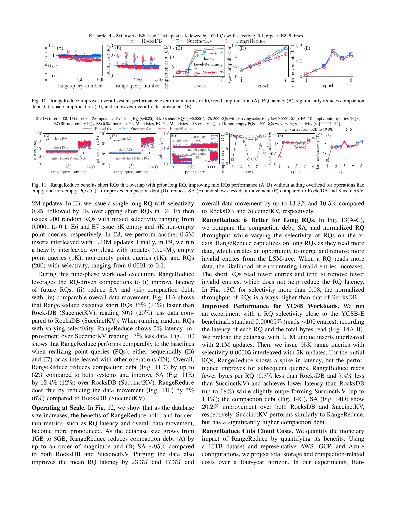

RangeReduce
学习时间：2026.5.9
I. Introduction
LSM-Tree 凭借高写入吞吐，已成为现代 KV 存储的事实标准 —— LevelDB、RocksDB、Cassandra、HBase、CockroachDB、ScyllaDB、DynamoDB 等无一例外地采用了 LSM 架构。然而，LSM 的 out-of-place 更新 在带来极高写入效率的同时，也付出了范围查询（Range Query, RQ）性能的代价。

一次范围查询要经历什么？ 想象 LSM-Tree 中的数据分散在多个层次、多个 sorted run 中。每次 RQ 必须：
- 探测 所有 sorted runs 定位起始 key
- 扫描 各 run 中符合条件的 entries
- k-way merge 内存中合并所有 runs 的数据
- 过滤 掉被 update/delete 逻辑失效的条目，只返回每个 key 的最新版本
在 update/delete 密集型负载下，这四条开销会被急剧放大。更糟的是，compaction 过程还会反复读写同一批数据 —— RQ 时读过一遍的数据，compaction 时再读再写一遍。论文将这种浪费概括为三个挑战：
Challenge 1: 高读放大与空间放大
LSM 的 out-of-place 更新意味着同一个 key 的多个版本同时存在于树中。以 leveled LSM、size ratio \(T = 4\) 为例，多达 25% 的条目可能是逻辑失效的。对于 tiered LSM（5 层 × 每层 10 tiers），一次 RQ 可能需要读 \(5 \times 10 = 50\) 个数据页并做 50 路归并。引用一位 Google 工程师的话："在有大量删除的负载下，范围查询通常要处理并跳过数百万个 tombstone 和逻辑删除的数据。"
Challenge 2: 重复归并
相同（或大量重叠）的范围查询每次执行，都要重新来一遍：磁盘读取 → 内存 merge → 过滤无效条目 → 构建结果。前一次查询耗费的 I/O 和 CPU 几乎无法被后续查询复用（除了有限的缓存收益）。
Challenge 3: 浪费的工作
在 leveled LSM 中，每条 entry 平均被 read/write \(T \cdot L\) 次。如果一条 entry 恰好被 \(C\) 次重叠 RQ 覆盖，其生命周期内总计被读写 \(C + T \cdot L\) 次。这造成了巨大的 I/O 浪费和 CPU 空转。
SuccinctKV 为什么不够？ SuccinctKV [71] 是唯一尝试用 RQ 触发 compaction 的学术工作，但有三处硬伤：
| 问题 | 原因 |
|---|---|
| WA 高 | Level i 的一个文件与 Level i+1 的 100 个文件合并时，99 个文件的数据被无谓重写 |
| SA 增加 | 每个文件附加固定大小的 meta-block 追踪有效条目，且 RQ 数据在多个 level 重复保留 |
| Compaction debt 无界 | 仅在 level 饱和时才触发 compaction，未饱和的 level 中积累大量无效条目 |
RangeReduce 的核心直觉很简单： RQ 已经付出了 I/O 和 CPU 的代价来读取、合并、过滤数据 —— 那为什么不一并把这些有效数据写回磁盘，形成一个 sorted run？这样，后续相同或重叠的 RQ 只需要读更少的数据、做更少的 merge。
RangeReduce in one sentence
以一次额外写入的代价，换取后续所有重叠 RQ 的性能提升，同时显著降低 compaction debt。
II. Background
2.1 LSM 架构概览

LSM-Tree 将数据分层组织在磁盘上：
- 每层容量按 size ratio \(T\) 指数增长（Level \(i\) 的容量是 Level \(i-1\) 的 \(T\) 倍）
- 数据先写入 内存 buffer，buffer 满了 flush 为不可变的 sorted run
- 两种经典布局：
| Leveled LSM | Tiered LSM | |
|---|---|---|
| 每层 sorted runs 数 | 1 | \(T\) |
| 查询性能 | 好（总 runs 数少） | 差（需要 merge 多个 runs） |
| 写入放大 | 高（合并更积极） | 低（合并更懒惰） |
2.2 基本操作
Put / Update： 插入新 key（或新版本）到内存 buffer 即视为成功。LSM 不做 in-place 修改。
Get： 内存 → 磁盘，Level 1 → Level L，同层内从新 run 到旧 run。找到即停。
Delete： 插入 tombstone 标记，在后续 compaction 中物理清除对应条目。
Range Query getRange(x, y)：
- 为每个 sorted run 初始化 迭代器
- Seek 到每个 run 中 \(\ge x\) 的起始位置
- 逐页读取符合条件的 entries
- 执行 k-way merge（leveled: \(k = L\)，tiered: \(k = T \cdot L\)）
- 过滤逻辑失效条目和 tombstone，返回结果
短 RQ vs 长 RQ 的 I/O 代价：
- Leveled，短 RQ： \(O(L)\) 次 I/O
- Leveled，长 RQ（selectivity \(s\)）： \(O(\frac{N \cdot s}{B})\) 次 I/O
- Tiered，短 RQ： \(O(T \cdot L)\) 次 I/O
- Tiered，长 RQ： \(O(\frac{N \cdot s \cdot T}{B})\) 次 I/O
III. Problem: Excessive Reads & Merging
3.1 三种浪费
如 Fig. 2 所示，现代 LSM 引擎在 RQ 上存在三层浪费：
| 浪费类型 | 表现 | 后果 |
|---|---|---|
| P1 读取失效数据 | 大量已被 update/delete 的条目在 RQ 时被读入内存再丢弃 | RA 随 update 比例线性增长 |
| P2 重复归并 | 相同/重叠 RQ 每次都重新 merge 和过滤 | CPU 空转，\(O(N \cdot s \cdot \log(N \cdot s) \cdot f_{RQ})\) 的 merge 开销 |
| P3 Compaction 重复 | RQ 读过的数据在 compaction 时再次被读写 | leveled 中每条 entry 平均被 read/write \(T \cdot L\) 次 |
3.2 量化模型
论文建立了一套量化模型来评估这些浪费的程度。核心参数如下：
| 符号 | 含义 |
|---|---|
| \(N\) | LSM 树中的总条目数（valid + invalid） |
| \(N_{unq}\) | 唯一 key 数量 |
| \(U\) | update 比例（%） |
| \(s\) | RQ 平均 selectivity |
| \(T\) | Size ratio |
| \(L\) | 磁盘上的 level 数 |
| \(P\) | 内存 buffer 可容纳的页数 |
| \(B\) | 每页条目数 |
| \(E\) | KV 对平均大小（bytes） |
| \(\phi\) | 触发额外写入的 RQ 比例 |
| \(\lambda\) | RQ 写入时额外产生的 I/O 数 |
| \(\beta\) | compaction 后 update 开销的缩减因子 |
Space Amplification：
Leveled LSM 的最坏情况 \(SA = O(\frac{1}{T})\)，Tiered 为 \(O(T)\)。这意味着 \(T=2\) 的 leveled LSM 中，多达 50% 的条目可能是无效的。
RQ Read Amplification（未使用 RangeReduce 时）：
Compaction Debt： 衡量将所有中间层数据 compact 到最后一层所需的额外写入总量。Leveled LSM 中：
3.3 云时代的成本放大
现代云数据库（BigTable、Cassandra、CockroachDB、RocksDB Cloud 等）按 I/O 次数 + 存储量 + CPU 周期 计费。LSM 在 RQ 密集型负载下的低效资源利用会直接转化为高昂账单 —— 这让问题从"性能优化"升级为"成本优化"。
IV. RangeReduce
RangeReduce 将 RQ 过程中完成的 merge 和过滤工作"物化"到磁盘上，避免了后续查询和 compaction 的重复劳动。其设计遵循一个递进式的优化路径：
4.1 Blind Merge-on-Scan（朴素版）
最直接的思路：每次 RQ 后，把 qualify 的所有 level 的有效数据合并写回最深 level。

收益
- RA 降低 17%（Fig. 4A）
- Compaction debt 降低 78%
- SA 降低 25%
- 浅层腾出 space，新写入可被"空隙"吸收，减少 cascading compactions
但三个问题致命
1. 碎片文件爆炸。 每次 RQ 在每个 qualified sorted run 上最多产生 2 个碎片文件。9K 个 RQ 后，文件数量是 RocksDB 的 2 倍，平均文件大小仅目标的 30%（Fig. 4B/C）。
2. 短 RQ 写放大失控。 短 RQ 只读很少数据却要重写同层大量数据，总写入量比 RocksDB 高 5 个数量级（Fig. 5E）。
3. RQ 延迟反而恶化。 额外的写入开销让延迟比 RocksDB 高 1.5 倍（Fig. 5B）。
4.2 File-Size-Aware-Merge-on-Scan
针对朴素版的两项关键修复：
修复 1：避免无效写入。 仅当该 level 中 RQ-qualifying 数据量 \(\ge \frac{\text{file\_size}}{2}\) 时，才允许该 level 参与 compaction。这确保了每次 compaction 都有足够的"前进进度"，避免反复重写同层数据。
修复 2：减少碎片。 将非 RQ 部分的文件合并为一个文件写入，每层最多产生一个碎片文件而非两个。
效果与局限
- 文件数量、碎片化接近 RocksDB 水平
- RQ 延迟比朴素版低 10%
- 但总写入量仍是 RocksDB 的 167×，数据移动多 31%（Fig. 5E/F）
4.3 Bounded-Merge
这是 RangeReduce 的核心算法。关键洞察：
Key Insight
如果 RQ 从 Level \(i\) 读到 \(x\) 条 entry，从 Level \(i+1\) 读到 \(y\) 条：
- \(x \ge y\) 意味着 Level \(i+1\) 包含大量待清除的无效条目 → 值得 compact
- \(x \ll y\) 意味着大部分数据原本就在目标层 → 重写收益极低
一个典型场景： 第一次 RQ 触发 compaction 后，后续重叠的 RQ 自然会从更深层读到更多数据，从更浅层读到更少 —— 此时继续触发 compaction 就等于反复重写同一层数据。
RangeReduceRatio (\(\rho\))： 定义一个可配置阈值。Bounded-Merge 仅在 Level \(i\) 的 RQ-qualifying 数据量 \(\ge \rho \times\)（Level \(i+1\) 的 qualifying 数据量）时，才触发两层之间的 compaction。实验表明 \(\rho = 1/T\) 对大多数 workload 效果最优（Fig. 6）。
Level Selection 算法：
# Algorithm 1: LevelsSelectionInBoundedMerge
# Input: L 层 metadata, RQ range R = [r_start, r_end]
# Output: 最优 levels 集合（空 if 不应该 compact）
# Phase 1: 计算每层 RQ-qualifying 条目数
Te = array(L) # 每层的条目数估计
for level in 1..L:
T_level = 0
for file in level:
[k_min, k_max], n = file.metadata()
if r_end < k_min or r_start > k_max:
e = 0 # 无重叠
elif r_start <= k_min and r_end >= k_max:
e = n # 完全重叠
else:
e = estimate(max(r_start, k_min),
min(r_end, k_max), n) # 部分重叠
T_level += e
Te[level] = T_level
# Phase 2: 构建决策矩阵 D[L×L]
D = matrix(L, L, False)
for i in 1..L:
for j in i..L:
if i == j:
D[i,j] = True
else:
ok = True
for k in i..j-1:
r_k = Te[k] / Te[k+1] # 相邻层 ratio
if r_k < ρ: # 检查 ρ 约束
ok = False
if Te[k] * E < file_size / 2: # 检查数据量约束
ok = False
D[i,j] = ok
d = deepest(D[i,j] == True) # 选择最深且连续的满足条件的 set
return d if d exists else empty

Bounded-Merge 的效果：
全面优于朴素版和 SuccinctKV
| 指标 | vs RocksDB | vs SuccinctKV |
|---|---|---|
| Compaction Debt | −90% | −82% |
| Space Amplification | −20% | −2% |
| 总数据移动 | −10% | 相当 |
| 总写入量 | +20% | 相当 |
| 平均 RQ 延迟 | −3% | — |
略微增加的写入量被大幅减少的读取和 compaction debt 所补偿，因而 overall data movement 更优。
4.4 Level-Renaming
Query-driven compaction 将大量数据推向深层。当最后一层饱和、树高增加时，每层文件都要 trivial move 到下一层 —— 即所谓的 cascading compactions。Level-Renaming 优雅地解决了这个问题：
所有 level 的逻辑 ID 递增 1，顶层插入一个空的新 Level 1。每层容量因此乘以 \(T\)，可吸收 \(T\) 次 buffer flush 后才需要 compaction，避免了 trivial file moves。
4.5 RangeReduce 整体架构
RangeReduce 集成在 RocksDB 8.5.0 的主线程中运行：

与 RocksDB / SuccinctKV 的设计对比：
| RocksDB | SuccinctKV | RangeReduce | |
|---|---|---|---|
| RQ-compaction | 无 | 有限（level 饱和才触发） | RQ-overlap-aware |
| Compaction 触发 | level 满 | RQ + level 满 | RQ + level 满 |
| 清除无效条目 | compaction 时 | RQ + compaction | RQ + compaction |
| SST 不可变性 | 不可变 | 逻辑可变 | 不可变 |
| Compaction 路径 | 标准 | 复杂 | 标准 |
| RQ 路径 | 标准 | 复杂 | 标准 |
| Metadata 开销 | 低 | 高（额外 meta-block） | 低 |
| 可配置性 | — | — | 仅一个参数 \(\rho\) |
SLO-Bounded Compactions。 为防止 RQ-driven compaction 违反 SLO，RangeReduce 在触发前估算端到端延迟 \(\hat{L}_{rq} \le \frac{2D_{rq}}{\max(B_r, B_w)}\)。若估计值超过 SLO，则退化为普通 RQ，不做额外写入。
仅一个参数
RangeReduce 只引入了一个配置项 \(\rho\)（RangeReduceRatio），默认值 \(\rho = 1/T\) 在广泛的 workload 上表现稳健，无需针对不同场景分别调参。
V. Evaluation
实验环境： Intel Xeon Gold 6240R @ 2.40GHz、192GB RAM、1TB SSD、Ubuntu 20.04 LTS。基于 RocksDB 8.5.0，使用 KVBench [72] 和 Tectonic [45] 生成 workload。
默认配置：
| 参数 | 值 |
|---|---|
| 初始数据量 | 1GB unique inserts + 1GB updates |
| RQ 数量 | 9K（selectivity = 0.1） |
| KV 大小 | 128B（key: 16B, value: 112B） |
| Memory buffer | 4MB |
| Size ratio \(T\) | 6 |
5.1 Holistic Improvements

四个维度的提升
- Compaction Debt（Fig. 8A）： 仅需 32 个 RQ 就开始显现优势，最终比 RocksDB 低 85%（SuccinctKV 因仅在 level 饱和时触发，效果有限）。
- Space Amplification（Fig. 8B）： 接近理论下界，比 RocksDB 改善 20%。
- Data Movement（Fig. 8C）： 比 RocksDB 少 12%。
- Throughput（Fig. 8D）： 整体吞吐优于 RocksDB。
5.2 Approaching the Ideal LSM Shape

- Compaction 工作量（Fig. 9A）： 比 RocksDB 低 50%，比 SuccinctKV 低 25%。原因：compaction 时 RQ 的结果无需重复读取。
- RQ 延迟（Fig. 9B）： 读放大减少 10%~15%（\(T = 2\) 到 \(10\)），SA 持续逼近理论下界（Fig. 9D）。
5.3 Update-Intensive Workloads
在 5 个 epoch 的 update-intensive workload 下（4.2M inserts → 420K updates + 100 RQs，重复 5 次）：

- 平均比 RocksDB 少读 16.9% 的 bytes，比 SuccinctKV 少 12.4%
- RQ 延迟比 RocksDB 低 5.4%，比 SuccinctKV 低 5.9%
- Compaction debt 分别低 85% 和 82%
- SA 改善 19%，data movement 少 9%
注意 Level-Renaming 在 epoch 6 的跳变出 —— 树高在此时增长，Level-Renaming 避免了 trivial compactions。
5.4 Adversarial Workloads
9 阶段混合负载：（inserts + updates + 长 RQ + 短 RQ + 空/非空 point queries + 混合 RQ）：

| 阶段 | RangeReduce 表现 |
|---|---|
| 短 RQ（E4，与 E3 长 RQ 重叠） | 延迟比 RocksDB 低 35%，比 SuccinctKV 低 24% |
| 随机混合 RQ（E5） | 延迟比 SuccinctKV 低 5%，少读 17% |
| Point queries（E6/E7/E9） | 无性能劣化 |
| Overall | Compaction debt −62%，SA −12.4%，data movement −7% |
5.5 大规模与长 RQ
- Scale-up（Fig. 12）： 数据库从 1GB 增长到 8GB，RangeReduce 的优势愈发显著 —— compaction debt 降低一个数量级，SA 接近理想值 ~95%，平均 RQ 延迟改善 23.3%（vs RocksDB）。
- 长 RQ 优势（Fig. 13）： selectivity > 0.03 时，RQ 吞吐始终高于 RocksDB。长 RQ 读更多数据意味着有机会合并和移除更多无效条目。
5.6 YCSB 与 云成本
- YCSB-E（Fig. 14）： selectivity = 0.00005%（每次约读 100 条 entry），95K RQs + 5K updates。RangeReduce 初始有延迟毛刺（首次 compaction 的代价），但后续 RQ 持续受益，最终延迟比 RocksDB 低 18%，bytes read 少 6.8%。
- 云成本（Fig. 15）： 基于 10TB 数据集，AWS / GCP / Azure 三家定价模型，4 年总成本：比 RocksDB 降低约 45%，比 SuccinctKV 降低约 18%。节省来自更少的 storage（SA 更低）和更少的 I/O（data movement 更少）。
VI. Related Work
LSM 性能优化主线：
- 读优化： Monkey [16]（optimal Bloom filter）、Rosetta [41]（range filter）、SuRF [70] 等
- 写与空间优化： Dostoevsky [18]（自适应合并收缩 RA/WA）、Lethe [59]（删除感知的 compaction）、Spooky [20] 等
- Compaction 策略： Compactionary [57]（taxonomy）、bLSM [64]、Partial Compaction 优化 [68]
Query-Aware 数据重组（RangeReduce 的思想源头）：
- Database Cracking [36]： 按查询谓词逐步切分关系表的列，以查询驱动的方式增量构建索引
- UpBit [8]： 查询时按需合并 bitmap 索引的 delta 更新
- Adaptive Adaptive Indexing [62]： 用 radix-based 划分代替谓词分解，避免过拟合
- TellStore [48]： 在 KV store 的 GC 时利用 scan 信息
RangeReduce 是第一个将 query-driven reorganization 思想系统性地应用在 LSM-tree compaction 上的工作，通过 \(\rho\) 参数和 lightweight 的 level selection 算法实现了成本可控的 eager compaction。
VII. Conclusion
RangeReduce 重新审视了 LSM 中 RQ 和 compaction 的关系：一次 RQ 完成的 merge + 过滤工作，不应在后续 RQ 和 compaction 中被反复重做。
通过将 RQ-qualifying 的有效数据写回为一个 sorted run，RangeReduce 实现了：
| 效果 | |
|---|---|
| Compaction debt | −90% |
| Space Amplification | −20% |
| Data Movement | −12% |
| 平均 RQ 延迟 | −18%（YCSB-E） |
| 云成本（4 年） | −45% |
更重要的是，RangeReduce 的设计保持了 LSM 的 SST 不可变性、标准 RQ/compaction 路径，且仅引入一个配置参数 \(\rho\)，工程化代价极低。论文预示了一个方向：将 RQ 从"纯粹的开销"重新定位为"对数据布局优化的投资"。